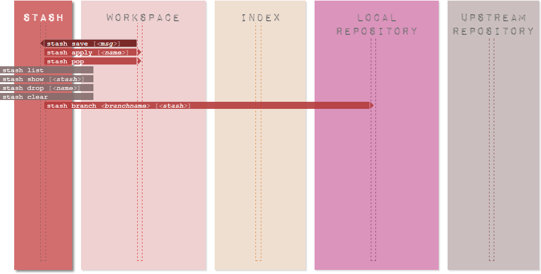
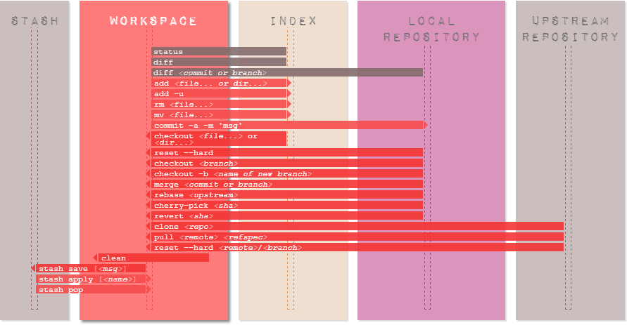
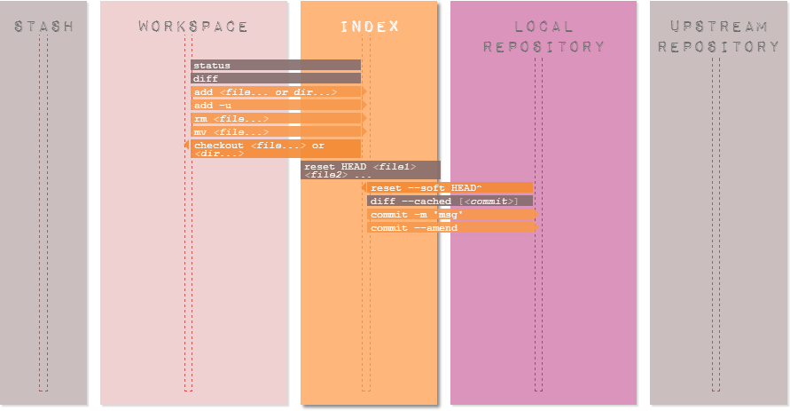
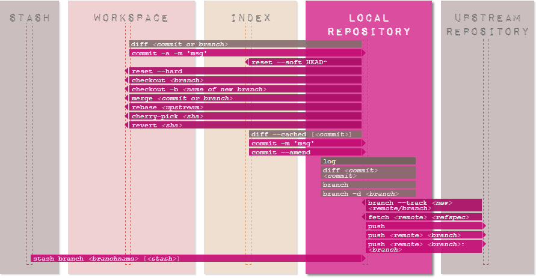
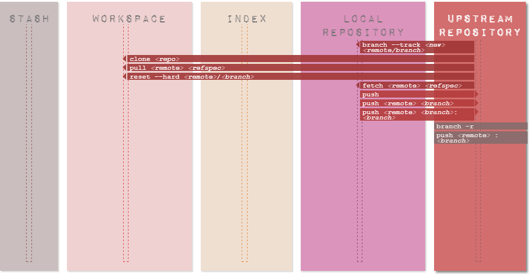

Version Control using Git#
Before you start#
The following resources contain useful information on version control systems:
- A Visual Guide to Version Control:
a simple explanation of version control with Subversion examples.
A successful Git branching model: a clear and structured workflow.
Git CheatSheet#
Source
Git CheatSheet,(c) 2011, salesforce.com, inc., URL: https://na1.salesforce.com/help/doc/en/salesforce_git_developer_cheatsheet.pdf
Overview#
When you first setup Git, set up your user name and email address so your first commits will record them properly.
git config --global user.name "My Name"
git config --global user.email "user@email.com"
Basic Git Workflow Example#
Initialise a new git repository, then stage all the files in the directory and finally commit the initial snapshot.
git init
git add .
git commit -m 'initial commit'
Create a new branch named feature_A, check it out so it is the active branch, then edit and stage some files and finally commit the new snapshot.
git branch feature_A
git checkout feature_A
(edit-your-files)
git add (the-files-that-you-edited)
git commit -m 'add feature A'
Switch back to the master branch, reverting the feature_A changes you just made, then edit some files and commit your new changes directly in the master branch context.
git checkout master
(edit-your-files)
git commit -a -m 'change files'
Merge the feature_A changes into the master branch context, combining all your work. Finally delete the feature_A branch.:
.. code-block:: bash
git merge feature_A git branch -d feature_A
Setup & Init#
Git configuration, and repository initialisation & cloning.
command |
description |
|---|---|
|
set a config value in this repository |
|
set a config value globally for this user |
|
initialise an existing directory as a Git repository |
|
clone a Git repository from a URL |
|
get help on any Git command |
Stage & Snapshot#
Working with snapshots and the Git staging area.
command |
description |
|---|---|
|
show the status of what is staged for your next commit and what is modified in your working directory |
|
add a file as it looks now to your next commit (stage) |
|
reset the staging area for a file so the change is not in your next commit (unstage) |
|
diff of what is changed but not staged |
|
diff of what is staged but not yet committed |
|
commit your staged content as a new commit snapshot |
|
remove a file from your working directory and unstage |
Branch & Merge#
Working with Git branches and with the stash.
command |
description |
|---|---|
|
list your branches. a * will appear next to the currently active branch |
|
create a new branch at the current commit |
|
switch to another branch and check it out into your working directory |
|
create a branch and immediately switch to it |
|
merge another branch into your currently active one and record the merge as a commit |
|
show commit logs |
|
stash away the currently uncommitted modifications in your working directory temporarily |
|
re-apply the last stashed changes |
Inspect & Compare#
Examining logs, diffs and object information.
command |
description |
|---|---|
|
show the commit history for the currently active branch |
|
show the commits on branchA that are not on branchB |
|
show the commits that changed file, even across renames |
|
show the diff of what is in branchA that is not in branchB |
|
show any object in Git in human-readable format |
Contributing on GitHub#
To contribute to a project that is hosted on GitHub (or another repository hosting site, such as BitBucket) you can fork the project online, then clone your fork locally, make a change, push back to GitHub and then send a pull request, which will email the maintainer.
(fork-the-project-on-github)
git clone https://github.com/my-user/project
cd project
(edit-your-files)
git add (the-files-that-you-edited)
git commit -m 'Explain what I changed'
git push origin master
(now-go-to-github-and-click-the-pull-request-button)
Visual Git Cheatsheet#
Source
Git Cheatsheet, (c) 2009-2012, Andrew Peterson url: http://ndpsoftware.com/git-cheatsheet.html
A list of Git commands, categorized on what they affect.
The interactive online version provides a description for each of the commands.
Stash#
A place to hide modifications made to the workspace, while working on something else. (The stash area is not required in a “normal” workflow.)
{kind=link}

Workspace#
The local working area.
{kind=link}

Staging area#
The “index”– or “staging area” – holds a snapshot of the content of the working area, and it is this snapshot that is taken as the contents of the next commit.
{kind=link}

Local repository#
A local area under version control. Typical branches: master, dev (for local development), feature_x, bugfix_y
{kind=link}

Upstream repository#
Typically a remote area under version control. Default name is ‘origin’. Typical branches here: master, shared_feature_x, release_y.
{kind=link}

How to…#
This section include miscellaneous Git commands to perform different operations.
Set up a merge tool to resolve conflicts#
Configure kdiff3 as the merge tool (in Windows)
git config --global mergetool.kdiff3.path 'C:\Program Files (x86)\KDiff3\kdiff3.exe'
git config --global merge.tool kdiff3
Invoke kdiff3
git mergetool <file>
Force an update from the upstream repository#
This operation will discard all changes in the local repository.
git reset --hard HEAD
git pull
Add untracked files to the set of files under version control#
A pattern can be used. For example, this will add any new or untracked *.rst file.
git add $(git ls-files --other *.rst)
Remove multiple files from the set of files under version control#
This will remove multiple files that have already been deleted from disk.
git rm $(git ls-files --deleted)
Alternatively, edit the .git\config file, and add the following lines.
[alias]
rma = !git ls-files --deleted -z | xargs -0 git rm
Then run the command using the alias
git rma
Disable quoted file names#
Special character and spaces in file names can be problematic. To disable quotes file names (Windows Unicode Support), use
git config [--global] core.quotepath off